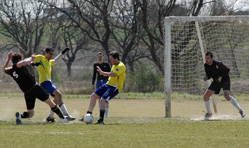

|
Misato, Saturday 28th March
The thought of getting up on a Sunday morning after a night drinking under the sakura to catch an early train out to the windy, dusty pitch that is Misato must have filled the team with dread! I however did all those things except the train and I have to say a car is the way to go! Still we all got there in some kind of condition, some hungover (naming no names), some with digestive issues (not sure Asahi pay the cleaners enough to go near that toilet again) and some in the peak of health, well, peak of health maybe a little extravagant. Still, we had a full team AND two subs, almost unbelievable.
After the excitement of putting up the nets the wrong way round, we finally got sorted out and kick off approached. We decided that linesmen would be useful and Mikhail “6 pack” Zhilkin, decided to woo the ladies by taking off his shirt, even in the freezing wind, mad Russians!

Finally after all the faffing we got to kick the ball, well the midfield and strikers did, being in defense we had very little to do to be frank. We peppered the Shane goal with strikes and corners all through the first half. Rick and Romen ruled the midfield with iron fists and heads of steel, winning the lion’s share of the tackles and headers. Ma wipped down the left like a wippet leaving the Shane defenders wondering where he’d gone! Occasionally their one man strike force got a touch on the ball, but for all intense and purposes we may have set a little teashop up on the half way line!
Our attacking prowess soon led to a wonderful goal that Jon will no doubt claim despite the shot being quite amazingly diverted. As he so eloquently put after the game “it was going in anyway”.
Who can argue with the Panther’s top scorer even if it did manage to go past Shibuya station on its way into the goal.
Before long our constant attack got us another goal. A nicely shaped corner led to a bit of a mess in the Shane box, a bouncing ball got half way between Sid’s head and the goalies’ hand, Sid (in slow motion) leaped forward connecting just enough to put the ball straight past the keeper to put us two in front. (yes, you did read this right, Sid scored!!!)
We continued battering the Shane goal and after another corner the Shane defense hoofed and hoped and with one of our players missing a very obvious (to me and I was there!) offside, the striker took his chance with the goalie off his line, running to take the free kick for offside, struck first time to bring the end of the first half to 2-1.
Not the best time to concede and aware that we were now against the wind we needed to press, keep the ball and control as well as we had been doing. Luckily for us we managed to control the ball and keep it moving around at feet. The wind was an unfair maiden to the Shane team, blowing their long balls too long and away from their ever increasing strike team.
Another corner led to another goal, the ball bounced off Ma, he turns, shoots…..he scores to bring the game to 3-1.
Noticing the game slipping through their fingers, Shane put three upfront with the task of breaking through our solid line of defense. Andy was the backbone of this strong formation and continued with the plan of saving my posterior when I screwed it up, yet again!! Pushing players forward led to some big holes in the midfield for the Panthers to exploit, even yours truly managed to get in on the action running down the wing in Gary Neville style! I think I even heard a cheer from the team as I dinked the ball around a midfielder and ran off to have a go at goal myself, shame I knocked the ball out of play!!
Shane, despite the huffing and puffing couldn’t blow down the Panthers’ solid two goal lead and we finished at 3-1.
Nice one Panthers, just have to begin the mental preparation for the trip out to Misato next Sunday!!
Report by Lee Rawlinson
|